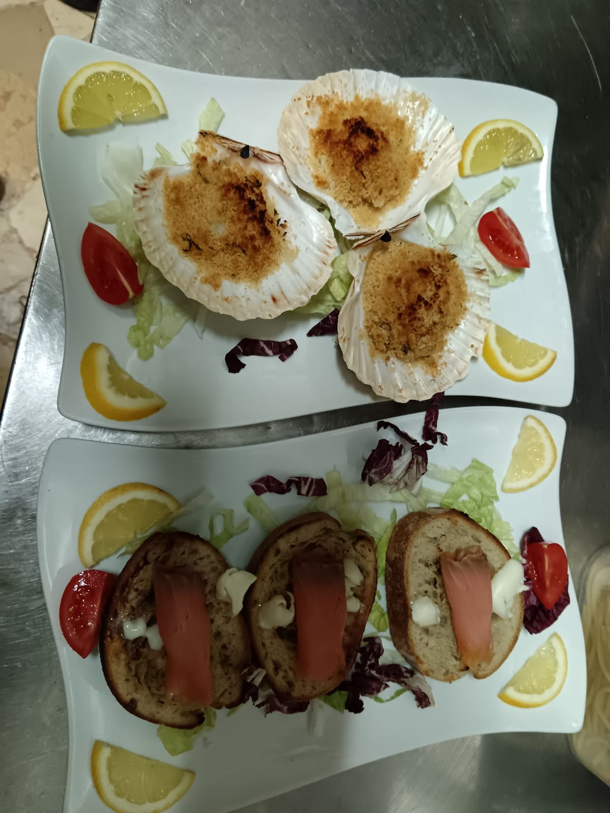
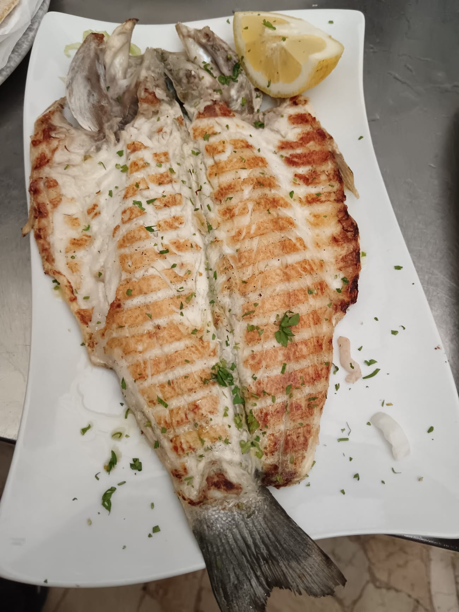
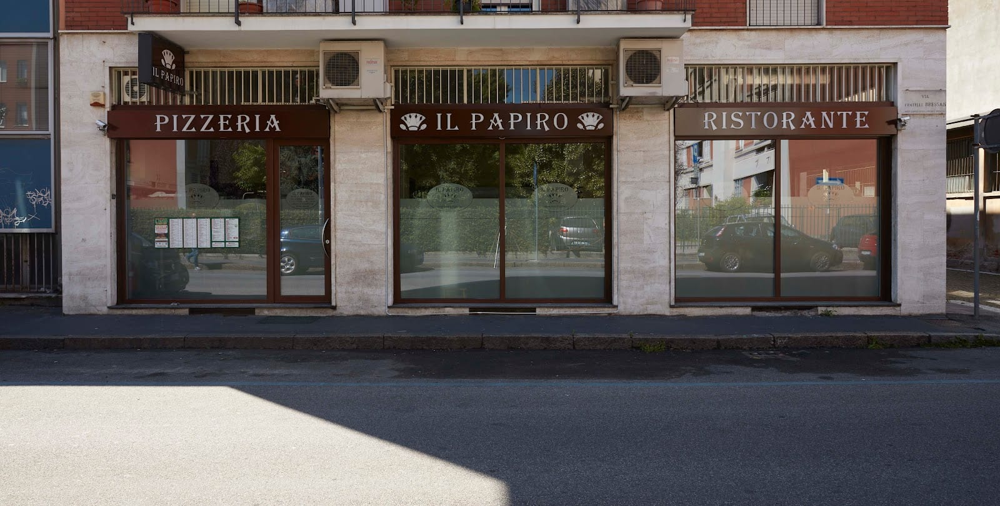

Pizzeria e ristorante · via Fratelli Bressan 11 · Precotto, Milano
Il Papiro
Qui la pizza comincia da dieci impasti diversi.
Uno di questi è quello che ti hanno sempre detto di no.
- 01Classicolievito madre
- 02Biobiologico · lievito madre
- 03Kamutbiologico · senza lievito
- 04Integralebiologico · macinato a pietra
- 05Multicerealibiologico · lievito madre · semi di papavero
- 06Platano frescosenza farine e senza lievito · adatto ai celiaci
- 07Farina di canapalievito madre
- 08Farro integralebiologico · lievito madre
- 09Senza glutineadatto ai celiaci · lievito di birra
- 10Carbone vegetalealtamente digeribile · lievito madre
Le diciture sono quelle del nostro menù. Per celiachia e intolleranze chiamateci prima di venire: al telefono vi diciamo com'è la disponibilità di oggi.
«Non mangio farine, lievito e formaggio… quindi pensavo non avrei mangiato mai più una pizza. Invece con la farina di platano e il formaggio vegano sono tornata a mangiarla.»
antonella cattaneo — recensione su Google
Non è una frase che ci siamo inventati per il sito. È il motivo per cui in cucina teniamo dieci impasti invece di uno.
Il gesto
Un fusto, dieci raggi
Il papiro della nostra insegna è fatto così: un solo stelo che in cima si apre a ventaglio. È anche il modo più onesto di spiegare come lavoriamo — una pizza sola, e dieci strade per arrivarci.
Il platano non contiene farine né lievito. La canapa e il farro portano lievito madre. Il carbone vegetale è quello scuro nella foto qui accanto: chi lo ordina lo fa perché lo digerisce meglio. Cambia la base, non cambia il forno a legna.
Formati: 33 cm oppure 45 cm, che sul nostro menù è indicata «per 4 persone».
Da dove viene il nome
La Faraone
Papiro è una parola egiziana prima che una parola italiana, e sull'insegna il disegno è quello della pianta. Nel menù quella radice compare in un punto solo, ma in due versioni: la Faraone, con ricotta, rucola, pomodoro fresco, falafel, tahina e peperoncino; e la Vega Faraone, la stessa idea senza niente di animale.
È l'unico posto del menù dove le due cucine si toccano davvero. Il resto è italiano largo: romano nei primi, milanese nei secondi, di mare più di quanto ci si aspetti.
- Faraonepomodoro, ricotta, rucola, pomodoro fresco, falafel, tahina, peperoncino
- Vega Faraonemozzarisella, rucola, pomodoro fresco, cipolle, falafel, tahina
Quello che nessuno si aspetta
Dentro la pizzeria c'è un ristorante di mare
Fra primi e secondi ci sono più di venti piatti di pesce. Chi ci conosce come «la pizzeria di via Bressan» spesso non lo sa, e continua a non saperlo perché non l'abbiamo mai scritto da nessuna parte.
- Spaghetti «Il Papiro»scampi, calamaretti spillo, bottarga15,00
- Spaghetti allo scogliopomodoro, calamari, cozze, vongole, gamberoni13,00
- Tagliolini al nero di seppiagamberetti, burrata, pomodorini, granella di pistacchio14,00
- Linguine all'asticepomodoro, astice, gamberetti18,00
- Capesante gratinatetre pezzi, servite nella conchiglia10,00
- Grigliata mista di pesceil piatto più richiesto della sera18,00
Sui primi di mare è possibile la pasta senza glutine.


In sala e in cucina
Lo dicono loro
Novecentoventitré recensioni su Google
-
«Pizze vegane deliziose, il personale molto gentile. Tutti i ristoranti e le pizzerie dovrebbero leggere il loro menu di pizze vegane e imparare.»
Federica Oltolina -
«Pizza di Platano SPETTACOLARE!! Finalmente una pizza naturale, leggera, con condimento super saporito. La pizza dei sogni. Grazie»
Katyusha Colangelo -
«Ottima e sorprendente esperienza in questa pizzeria. Varietà incredibile di impasti, tra cui quello di platano fruttariano che è stato una rivelazione. Vasta scelta di dolci vegani. Ottimo rapporto qualità-prezzo. Lo raccomando.»
c v -
«Al Papiro troverete moltissime pizze tra cui scegliere: ottimo l'impasto al platano e ottimi i gusti vegani! Personale molto gentile e disponibile. La consiglio!»
Tea Arrigoni -
«Pizza molto buona e prezzo del menù conveniente (10€)»
Daniele Riva
Dove siamo
Via Fratelli Bressan 11, Precotto
Siamo all'angolo, con tre vetrine sulla strada: PIZZERIA · IL PAPIRO · RISTORANTE. Si entra anche da via Privata Licurgo 20. La metropolitana più vicina è Precotto, sulla linea rossa.
Controllo gli orari…
| Lunedì | 12:00 – 15:00 | 19:00 – 23:30 |
|---|---|---|
| Martedì | 12:00 – 15:00 | 19:00 – 23:30 |
| Mercoledì | 12:00 – 15:00 | 19:00 – 23:30 |
| Giovedì | 12:00 – 15:00 | 19:00 – 23:30 |
| Venerdì | 12:00 – 15:00 | 19:00 – 23:30 |
| Sabato | 12:00 – 15:00 | 19:00 – 23:30 |
| Domenica | 12:00 – 15:00 | 19:00 – 23:30 |

La mappa è di Google: aprendola, Google riceve il tuo indirizzo IP e può usare i suoi cookie.
Domande che ci fanno al telefono
Quanti impasti diversi avete?
Dieci: classico, bio, kamut, integrale, multicereali, platano fresco, farina di canapa, farro integrale, senza glutine e carbone vegetale. Ognuno ha una sua lievitazione.
Avete pizze adatte ai celiaci?
Sul nostro menù due impasti sono indicati come adatti ai celiaci: il platano fresco, che è senza farine e senza lievito, e l'impasto senza glutine. Trattandosi di intolleranze, chiamateci prima di venire: vi confermiamo al telefono la disponibilità del giorno e come lavoriamo in cucina.
Le pizze vegane sono un menù a parte?
No, corrono di fianco a quelle classiche: c'è una lista intera di pizze vegane, e anche antipasti, primi, secondi e dolci vegani. Chi è vegano ordina dal menù come tutti gli altri.
Siete aperti la domenica?
Sì, siamo aperti tutti i giorni, domenica compresa: pranzo 12:00–15:00 e cena 19:00–23:30.
C'è un menù del giorno?
Sì, un menù del giorno a 10 euro con primo, secondo e contorno; in alternativa si può fare con una pizza a scelta. Conviene chiedere al telefono cosa c'è oggi.
Fate solo pizza?
No. Oltre alla pizza c'è una cucina di mare con oltre venti piatti fra primi e secondi, più carne alla griglia e piatti della tradizione romana e milanese.